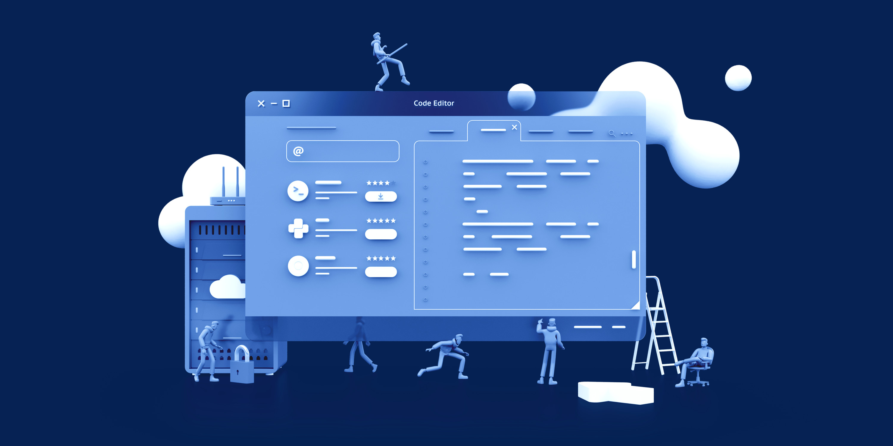

10 шагов, чтобы стать топ-кодером.
«Быть хорошим кодировщиком - это хорошо, но пользуется спросом, так как топ-кодер - это великая вещь, которую человек может достичь в своей жизни».
Кто такой кодер?
Человек, который разрабатывает приложения, а также веб-сайты, которые используют простые люди. Coder - это тот, кто делает свое приложение привлекательным и удобным для пользователя, и в настоящее время самыми требовательными технологиями, которые пользуются огромным спросом в 2019 году, являются React Native для создания приложения и React Native Web для разработки веб-сайтов.Кодер
- это человек, который создает компьютерное программное обеспечение или приложения / веб-сайты на языках программирования. Большинство кодировщиков имеют обширный опыт в области вычислений и кодирования на разных языках программирования, а также на разных платформах, включая язык структурированных запросов (SQL) , Perl, расширяемый язык разметки (XML), PHP, HTML, C, C ++ и Java, а также JavaScript.Кодер
также может специализироваться в одной или нескольких вычислительных областях, таких как база данных, безопасность, а также программное обеспечение, мобильная связь, веб-разработка. Кодер работает как создатель, который создает эти приложения и веб-сайты для компании. Или как удаленный работник, кодеры назначаются компанией, которая называется Удаленные работники, которые нанимаются из разных стран.
Поскольку все мы знаем, что практика делает человека совершенным, никто не имел знаний по рождению, и для того, чтобы утвердиться на вершине, требуется много времени. Во-вторых, работая усердно и ваши навыки делают вас эффективным программистом. Ваши перспективы и процесс мышления делают вас лучшим и лучшим.
Шаг 1. Соберите знания:
Некоторые работодатели требуют только, чтобы кодеры имели степень младшего специалиста или бакалавра, а также степень бакалавра обычно приводит к более высокооплачиваемой карьере с более гибкими возможностями для кодировщиков. Для получения степени бакалавра или младшего специалиста в этой области потребуются курсы по информатике, программированию, веб-разработке, операционным системам, концепциям баз данных и компьютерной архитектуре. В дополнение к академической работе в университете студенты также получают практические возможности для изучения того, как конвертировать код и языки программирования.Шаг 2. Решите свое поле с умом.
Очень важно очень тщательно и на основе интересов определиться со своей карьерой-программистом и сферой деятельности.Существуют разные типы платформ программирования / кодирования. Кроме того, когда вы выясняете, как научиться программировать, вам необходимо тщательно продумать область, в которой вы планируете работать. Некоторые из наиболее популярных типов кодеров включают в себя:
Веб-разработчики
Веб-разработчики могут быть далее разделены на интерфейсные и конечные кодеры. Интерфейсные
кодеры несут ответственность за написание кода о том, как выглядит сайт и как представлен его
контент. Программисты должны создавать веб-приложения и другие сложные программы, которые
обеспечивают основу для работы веб-сайта. В 2019 году React Native Web является самой
требовательной, а также новой технологией, которая используется для разработки веб-сайта в
достаточной степени и творчески, а также полезно быть топ-программистом.Программисты
Программисты - это тот, кто разрабатывает или создает программное обеспечение для клиента /
компании на основе спроса. Но они обычно принимают дизайн или концепцию, которая была бы
полезна, а также чтобы быть лучшим программистом. Очень важно знать, что нужно вашему клиенту и
какова цель программного обеспечения. Есть несколько языков программирования, в которых вы
должны разбираться: Java, JavaScript, C ++ и Python.Разработка мобильных приложений
Мобильным приложением легко пользоваться, спрос на новые интересные мобильные приложения также
растет. Таким образом, разработка мобильных приложений быстро становится одной из самых
прибыльных областей программирования, особенно если вы хорошо работаете самостоятельно.
Внештатная работа очень распространена для мобильных программ. Кроме того, лучшая технология для
создания мобильных приложений - это React Native, который используется для создания эффективных
мобильных приложений. Кроме того, это легко учиться, а также работать на React Native.Шаг 3. Будь модной птицей, узнавай новые вещи.
Для разработчика очень важно постоянно быть в курсе новых и передовых технологий. Чтобы они могли создавать более эффективные и продвинутые веб-сайты или приложения или программное обеспечение для своих клиентов. В эту эпоху технологий, новые вещи или вы можете установить новые технологии приходят так быстро. А также спрос на продвинутые версии всегда на высоте. Таким образом, чтобы быть на вершине, кодер должен быть в курсе всех новых и последних версий технологий и программ.Шаг 4. Будьте дружелюбны с некоторыми основными языками:
После того как вы освоились в области программирования, вам нужно выучить несколько языков программирования, которые имеют отношение к вашей интересной области. Например, научитесь SQL, чтобы стать администратором базы данных, а также CSS, и JavaScript, чтобы стать интерфейсным веб-разработчиком, и что-то вроде Java или Swift, а также реагировать на нативный, если вы хотите начать создавать мобильные приложения.«Быть на вершине - нелегкий путь, чтобы достичь вершины, нужно учиться, терпеть неудачи, стоять и добиваться успеха»
Ниже приведены некоторые из самых популярных языков программирования и их использование. Убедитесь, что вы проводите свои исследования, чтобы убедиться, что вы изучаете языки, подходящие для той области, в которую вы надеетесь попасть.
JavaScript.
JavaScript - это еще один универсальный язык программирования, который используется для многих целей. Если вы хотите узнать, как стать программистом, JavaScript может быть хорошим местом для начала. Он используется для интерактивного интерфейсного веб-дизайна, разработки фоновых веб-приложений, разработки игр, а также в робототехнике.Python.
Python - один из самых универсальных и распространенных языков программирования в мире - отличный выбор для людей, которые хотят работать в области наук о данных, разработки программного обеспечения или практически в любой другой области программирования. Python также используется в ряде новых технологий, таких как машинное обучение и искусственный интеллект.CSS / HTML.
Если вы хотите заняться веб-разработкой любого рода, тогда HTML и CSS являются обязательным условием. Хотя это два отдельных языка, они почти исключительно используются вместе для создания привлекательных, продуманных веб-страниц.Java.
Java находится там с Python как один из самых универсальных языков в мире. Его довольно просто учить, он читает как английский, и это фаворит среди начинающих. Кроме того, он используется для всего: от разработки мобильных приложений для Android до разработки внутренних веб-приложений.Ruby.
Ruby стал популярным благодаря его использованию в качестве полноценного языка веб-разработки. Первоначально разработанный в Японии для создания игр, Ruby является еще одним универсальным языком с множеством вариантов использования, и его определенно стоит рассмотреть, если вы хотите заняться веб-разработкой или разработкой игр.Это некоторые языки программирования, которые кодировщик должен знать очень хорошо.